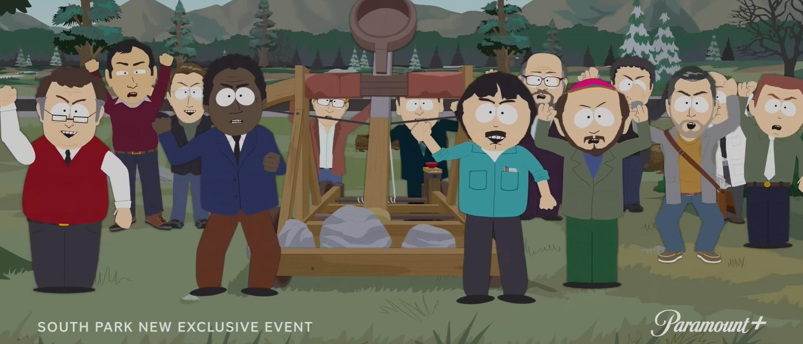

‘South Park: Joining The Panderverse’ Perfectly Depicts The Utter Chaos Of Modern Life And Hollywood In Brutal Fashion“South Park: Joining The Panderverse” dropped Friday, and it’s absolutely *chefs kiss.* Saying the creators of “South Park” did something “in brutal fashion” feels somewhat redundant. But “Joining The Panderverse” is arguably one of their most on-the-nose specials yet, and it is absolutely worthy of such description. It feels like no one is spared from the roasting of Trey Parker and Matt Stone, and nor should we be. The general plot of the special follows Cartman as dreams of an alternate universe inhabited exclusively by racially diverse women plague him. He eventually finds himself trapped in that universe with real-life Disney board member, Kathleen Kennedy. How dare people enjoy movies that aren’t Woke! https://t.co/62w4NBY1h8 — Daily Caller (@DailyCaller) April 26, 2022 Kennedy is apparently to blame for the wokening of all major entertainment franchises, and Cartman absolutely hates her. But not all is as it seems. The twist ending between these two is actually really humbling. I hope Kennedy took some notes. Aside from Cartman’s endless antics, the town of South Park finds itself plagued by a total dependency on a handful of extremely wealthy handymen. Again, the story is so intricately involved and detailed, it’s almost hard to remember just how filthy Parker manages to make his scripts while devising such an epic metaphor for modernity. All I took away in the days later was how grateful I am I learned how to build and fix stuff to where I don’t have to rely on handymen all the time. (RELATED: South Park Clips Perfectly Predicted How Insane The Left Would Get) But I also feel like Parker was trying to communicate western dependency on technology. Like, if social media, Google, and the internet went away (which could literally happen any second), how would most people be able to survive? Not very well, in my opinion. And I think Parker was passing along the same message in this special. You can watch the full thing on Paramount+. Thank me later. |
 |